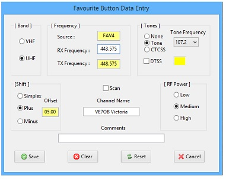
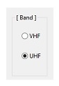
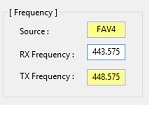
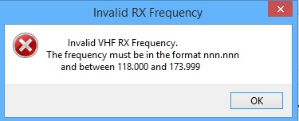
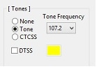
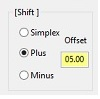
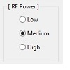
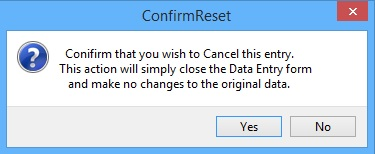
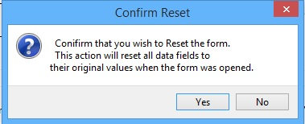
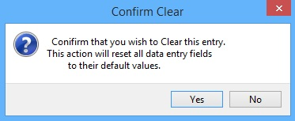

DEF_1
The Data Entry Form is a common form used to configure all channel data regardless of source (VFO or Memory) or band (VHF or UHF) and consists of a Title Bar, Main Data Entry Area and four Command Buttons. When the Data Entry form is initially displayed, the data from the channel last selected for the data source will be used as default data to populate the Data Entry form fields.
The Title Bar displays the data source or Channel Type (VFO, UHF Memory, VHF Memory or Favourite Button).
The Main Data Entry Area consists of a small data entry area and five functional Data Entry Panels that contain standard Windows Textboxes, Drop-Down Lists, Radio Buttons and Checkboxes. These controls are enabled and disabled depending on the data being entered at any specific time. Within each panel, only one of the set of Radio Buttons available can be selected. There are three Textboxes that are read only and cannot be changed (Source, TX Frequency and Offset). These boxes contain static or calculated data. A fourth Textbox (DTSS Code) is only enabled if the DTSS Checkbox has been selected.
It is imprtant to understand that the Band, Frequency and Shift panels are all related and work together. The Band radio buttons define the frequency limits for entry and the Shift Offset value. The Shift Offset value is used in the calculatiuon of the Transmit Frequency.
Extensive error checking and data validation are done on the data entered into this form. When the Save button is selected, all data is checked to ensure that the frequency entered is valid for the band selected, the DTSS Code if entered) is three digits and, a valid Channel Name is entered. The data entered into each text box is validated on entry and only valid digits or alpha-numeric characters are allowed as required. A channel entry will not be saved with invalid data and an error message will be displayed indicating the error.

DEF_2
The Band Panel contains two radio buttons that are used to configure the band to be used for this channel and as a direct result define the frequency limits that are valid for the entry of the Receive Frequency and calculation of the Transmit Frequency as well as the Frequency Offset value to be used (600 kHz for VHF or 5 MHz for UHF). Frequency limits are those limits defined in the Kenwood TMV7A manual and are VHF - 118.0 MHz to 173.995 MHz and UHF - 410.0 MHz and 469.975 MHz.
Only one radio button may be selected.

DEF_3
The Frequency Panel contains three Textboxes. The user can only enter data into the RX Frequency textbox. the other two textboxes are read-only.
The Source textbox is a read-only textbox that is used by the application to identify both the source or channel type.
If the source is the VFO the text will display the band and text "VFO" (VHFVFO or UHFVFO) depending on which menu item was selected.
If the source is one of the Memory dialogue boxes then the text will display the band and channel number (VHF001 or UHF001).
If the source is one of the Favourite buttons then the text will display "FAV" and the button number (FAV1).
The RX Frequency textbox will display the current frequency of the source. In the case of a blank (non-configured) Memory channel or Favourite button then it will be blank. This is the textbox used to enter the desired frequency. The data entered in this textbox is validated on entry and must be in the format "nnn.nnn". Only the digits 0 to 9 and the decimal point may be entered and the decimal point may only be in the fourth character position. The frequency must be a full six-digit value. It is important to note that only a valid frequency can be entered depending on the setting of the Band radio buttons (UHF or VHF). Any invalid frequency will result in an error message.

DEF_4
The TX Frequency is automatically calculated by the application depending on the band selected and is displayed in this textbox. It is not editable by the user.

DEF_5
The Tones panel is used to configure PL or CTCSS tone and DTSS Code functionality and consists of three radio buttons and a drop-down list for tones and a checkbox and edit box for DTSS Codes.
There are three radio buttons used to define tone functionality. Only one of the buttons may be selected:
DTSS Code functionality is enabled by selecting the DTSS checkbox. If this checkbox is selected, the DTSS Code edit box is enabled and the DTSS default code "000" will be displayed. This default can be changed but the change must be a three-digit code between 000 and 999.

DEF_6
The Shift panel consists of three Shift radio buttons and an offset Textbox and is used to select either Simplex or Repeater operation for the channel entry. The Repeater Offset value is fixed and is a function of the band selected in the Band panel ( 600 kHz for VHF or 5 MHz for UHF). The offset value is displayed in the Offset textbox automatically.
Only one of the radio buttons can be selected.

DEF_7
The RF Power panel conatins three radio buttons that are used to select the default RF power setting for the channel entry. Only on of the three buttons may be selected.
There are four command buttons at the bottom of the Data Entry form that allow the user to complete the DataEntry process.
The Cancel button is used to cancel the Data Entry process and exit the Data Entry form without changing or saving any channel data. If the Cancel button is selected, a confirmation message is displayed requireing the user to confirm the cancellation with no changes.

DEF_8
If the user selects the <Yes> button the DataEntry form will be closed. If the user selects <No> the form will remain open and no changes will be made.
The Reset button is used to cancel any changes made to the data fields will be reset to the initial default data. If the Reset button is selected, a confirmation message is displayed requiring the user to confirm that any changed data will be reset to its original default state.

DEF_9
If the user selects the <Yes> button any changes made to the data fields will be reset to the initial default data and the form will remain open. If the user selects <No> the form will remain open and no changes will be made.
The Clear button is used to Clear all data fields. If the Clear button is selected, a confirmation message is displayed requiring the user to confirm that all data fields will be cleared and previous data will be lost..

DEF_10
If the user selects the <Yes> button all data fields will be cleared and the form will remain open. If the user selects <No> the form will remain open and no changes will be made.
The Save button is used to save the channel data and close the form. If the source is VFO, then selecting the Save button will also set the TMV7A to the saved channel.
Created with the Personal Edition of HelpNDoc: Generate EPub eBooks with ease